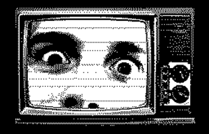

About:

ARTV is a faux TV station.
The programme launched in 2014 and in the years since has enjoyed mild success and a dedicated audience.
While it is easy to say that it is just a bloke playing video games, I'd like to think that ARTV is an environment where
the game is just the excuse to veer off into more in-depth discussions with the audience on topics ranging anywhere
from politics to philosophy, to cinematography, to programming, to linguistics, etc. It also serves as a medium via
which many have found new and interesting works via recommendation from the host or other audience members.
A staple of the programme is a so called "blind playthrough", where the host and likely most of the viewers are
experiencing a work for the first time, stopping at opportune moments to remark upon anything that might have piqued
their interest. Anyone who aims to disrupt that is purged along the way violently and swiftly. There is only one simple rule:
If you don't like it - don't fucking watch it.